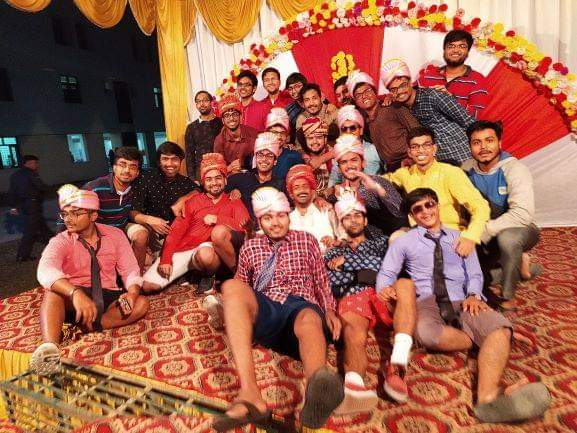

PLACEMENT POSTULATES -By Jeetendra Kumar Patel
Let me first introduce myself. I am Jeetendra Kumar Patel Y16, B.Tech graduate in Civil Engineering, IITK. Currently, I am working in IOCL and I got my first job in IOCL through placement drive in Phase 2. Since my sophomore year, I was interested in Civil Engineering and wanted to work in core jobs and IES (Being the most prestigious one for Civil Engineers). I always wanted to prepare and crack the ESE (Engineering Services Examination). During my placement season, I had decent preparation for my core subjects, so I applied mostly for core jobs and luckily Tata Projects came. It was one of the highest paying core companies to offer us jobs that came in Phase 1 of the placement drive. I tried my best and with some luck, I was selected for the interview. Tata came on Day 3. I was prepared for the interview as much as I could but I was a little scared and nervous as that was the first interview of my life. Somehow, I trained myself for the interview and I went for it, but due to my low confidence and nervousness, I was not selected. I started applying for non-core jobs (other than coding profile) due to fear of missing out on good placement. That was a very bad time for me but somehow, I survived. Just like that, my Phase 1 was over, but all these failures made me understand my strengths and weaknesses that helped me crack IOCL interview in Phase 2 later. I got to know from seniors and SPO that a higher number of core companies would come in Phase 2, so I regained my confidence and applied for Phase 2.
We all know that in Phase 1 most of the companies come for profiles like Coding, Data Analyst, Product Manager and some other non-core related profiles. Past trends indicate that majority of core companies visit campus in Phase 2. So, all the core job aspirants have higher chances of getting a job in Phase 2. The PSUs also come in Phase 2 (fastest & easiest way to become Sarkari babu 🙂 ). During my placement drive, IOCL and ITI came in Phase 2 before the lockdown was enforced.
IOCL conducted the selection process in the following manner:-
- Pre-Placement talk
- Group discussion
- Group task
- Interview; they took interviews of all the candidates irrespective of GD and GT score.
The number of companies that arrive in Phase 2 is moderate. Even the number of core companies that come are decent. Most of the companies offer an agreeable package. Also, in phase 2, the competition is not too high, because by that time most of the students are already placed and if you have a decent CPI of above 6.5 -7, then there is a good chance of being shortlisted by most of the companies. When phase 2 starts, we already have some experience of giving interviews and from those experiences, we will get to know our weaknesses and strengths and that will truly prepare us for that one golden interview.
Guys, the most important thing from my side: don’t be shy of our friends and take their help anywhere and everywhere possible and vice-versa. They will be the pole star in the dark night of your placement drive.
Let me tell you my story….”Hardik Harsh” - I would like to give all the credit for my placement to this guy. Not to forget my roomie ‘Danish Ahmad’ - my personal Sandeep Maheshwari. They have helped me cross the rough sea.
“Hardik Harsh”... Placement ke time daily mere saath jaata mujhe motivate karta rehta .. .jab kisi company me nahin hota tha tab bolta tha bhai tension na le…. tera achhi jagah placement hoga... ... usne Mock interview and GD ki khoob practice karwai .... even mere IOCL ke time, Placement office me wo result ka wait karta rha aur sabse pehle placement ki khabar usne hi bataya tha, “bhai tu placed ho gaya hai, aur dekh meri baat sach ho gayi ...” At last friends se help mango aur do jitna ho sake ... contact me rho....Be confident...chap doge..sab, just don't loose hope.
“Good friends like Stars, You don’t always see them but you know they are there.”